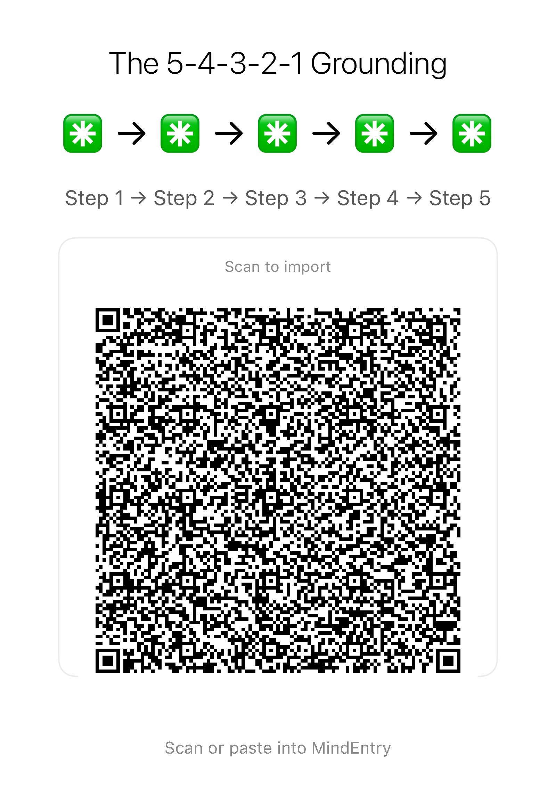

Not life optimization. Cognitive reset.
Minimal state-transition recipes for moments when the mind gets overloaded, looping, frozen, or stuck.
CogniHacks are lightweight cognitive resets that can run with or without MINDBEBOP apps. Some are simple physical or sensory resets. Others become structured runtimes through MindEntry and the MINDBEBOP system.
Last Updated: 2026-05-25
Traditional “Lifehacks” ask your brain to optimize, plan, organize, and improve itself. But when your mind is overloaded, looping, or frozen, more optimization usually creates more friction.
In those moments, the mind often does not need analysis. It needs a state transition.
A CogniHack is a small deterministic sequence designed to interrupt cognitive friction and move the mind into a different state with minimal decision-making.
Some CogniHacks can be done anywhere without an app. Others use MindEntry and the MINDBEBOP runtime to structure the transition more explicitly.
They are not productivity systems. They are not self-optimization frameworks.
The Situation: Your brain is buffering. Anxiety, loop thoughts, or an ADHD freeze have overloaded your working memory, leaving your mind stuck inside itself.
Run this smoothly without cognitive load:
Reading and remembering these steps manually still requires mental effort. To remove this last piece of friction, run this recipe directly on the MindEntry runtime. One screen, one tap, zero thinking.
Run this smoothly without cognitive load
Method 1: Scan to Import

Method 2: Copy & Paste Code into MindEntry
CogniHacks are no-app resets. MINDBEBOP Recipes use MINDBEBOP apps as a runtime.
Both are built around the same idea: the mind does not always need advice, analysis, motivation, or optimization. Sometimes it needs a clean state transition.